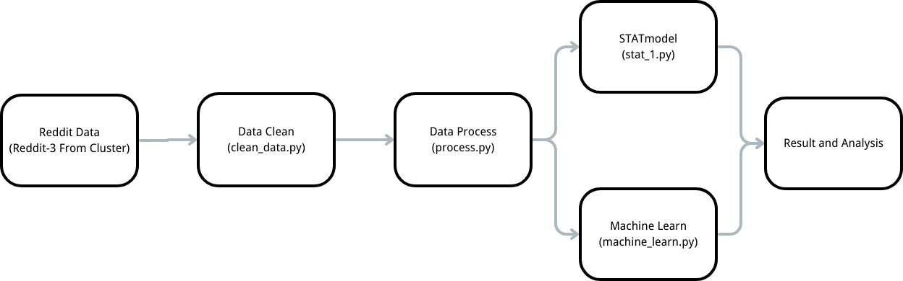

This project was conducted as the final project for CMPT 353: Computational Data Science at Simon Fraser University, under the supervision of Professor Greg Baker. It investigates the relationship between sentiment scores, readability levels, and the perceived quality of Reddit comments, using both statistical and machine learning methods.
By combining natural language processing and data analytics, we aimed to answer a key question: What factors make a Reddit comment “good”?
The dataset, derived from Reddit’s 2016 archives, contained posts from five mid-sized subreddits totaling around 790 MB of text data. Each entry included the comment content, author, timestamp, subreddit, and upvote score. We introduced additional features such as:
We applied two complementary approaches:
Both models were trained and evaluated on SFU’s high-performance computing cluster.
The regression analysis revealed that comments with more positive sentiment and simpler readability tended to score higher in quality. However, the effect was smaller than expected, indicating that quality perception on Reddit is multifaceted.
The MLP classifier achieved around 66% accuracy(really not good) across different feature combinations, confirming that while linguistic features matter, social and contextual factors also play key roles.
Our analysis relied solely on textual and temporal features. Future improvements could include:
With more time and computing power, a deeper model could reveal subtler semantic and behavioral patterns behind online engagement.
This project was completed by Team GG: Eric Chan, Chenzheng Li, and Ziying Peng ↗ (names are listed in alphabetical order, without implying any priority).
We thank Professor Greg Baker for his guidance and valuable feedback throughout the course. Collaborating with my teammates taught me the importance of communication, trust, and shared learning — the true essence of team-based data science.